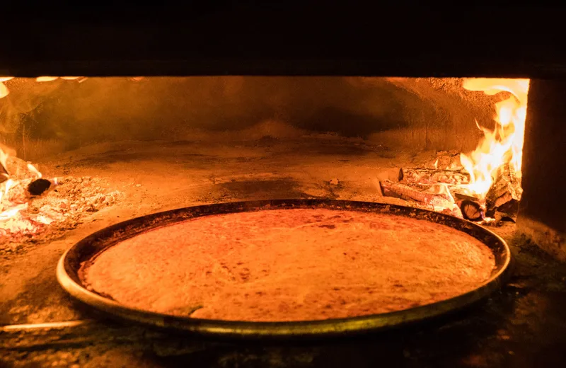
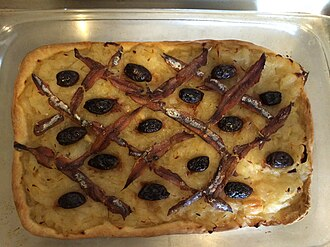

Truffes Folies Paris 7
TheFork 9.5/10 · 7,326评
10/2 午餐 · 37 Rue Malar · 平均€46
推荐：truffle pasta / risotto / ravioli。
类型：松露主题正餐。
Le Bistro Dalpozzo
TheFork 9.1/10 · 1,139评
10/4 晚餐 · Nice · 平均€39
推荐：Boeuf braisé au Chianti €29 / 牛脸颊等浓汁肉。
备选：gnocchi à la daube。
Brasserie Bellanger
巴黎传统 brasserie · 10区
10/8 午餐 · 140 rue du Faubourg Poissonnière
推荐：bœuf bourguignon / saucisse-purée / 牛肉浓汁类，可按当天菜单选择。

Chez Thérésa
尼斯传统 socca · 适合外带
10/4 中午 · 28 rue Droite / Cours Saleya
推荐：socca，可加一份 pissaladière。
用餐方式：外带至海边或附近长椅；旅游局标注可用英语交流。

BO&MIE Saint-Michel
左岸 · 拉丁区 / 圣母院顺路
10/1 午餐 · 5–7 boulevard Saint-Michel
推荐：quiche、三明治或当日烘焙。
支持外带，也有堂食座位。

Boulangerie Veziano
Google聚合 4.6/5 · 454评
10/7 Antibes · 上午
推荐：pissaladière、fougasse 或面包，可带到海边作为午餐。
提示：热门品可能提前售罄。

Boulangerie Raphaëlle
Google聚合 4.6/5 · 690+评
10/8 Montmartre 早餐
推荐：croissant 或 pain au chocolat + 咖啡，也可加三明治或 quiche。
Gelateria Del Porto
Tripadvisor 4.7/5 · 699评
10/7 Antibes · 老港附近
冰淇淋店，适合从 Gravette 海滩返回老城时顺路前往。
Tutti Frutti
Menton · Rue Saint-Michel
芒通老城 · 柠檬 sorbet
位于老城步行线路上，可在游览 Rue Saint-Michel 时顺路前往。